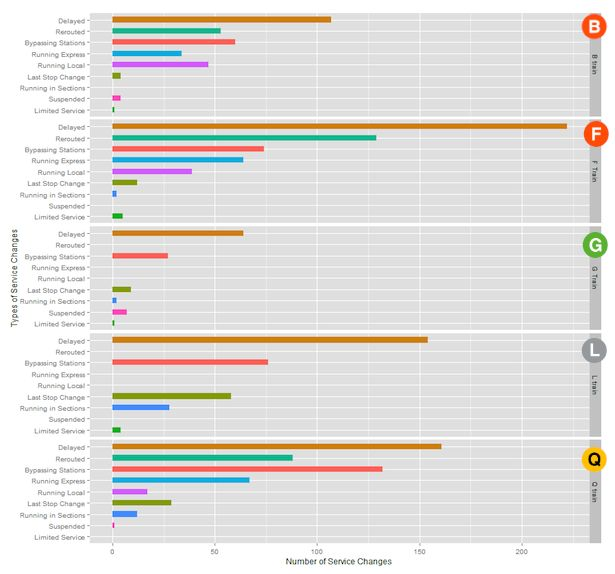

Delays
Subway delays have become a frustrating fact of life in New York City. Every day a new set of alerts about painful disruptions comes across the media. The truth behind delays is the aging equipment in the 112-year-old system, That causes signal problems, this is an enormous problem. The major cause of subway delays is the train system wasn't made for overcrowding. Large crowds slow down trains by MTA has a target time to board everyone in 30 seconds, but it doesn’t take 30 seconds it takes about 45 seconds to 1 minute in that time people start to come and that creates more crowding. There's a company called STCS, that company aims to decrease the delays in the train systems. The company will make an AI that makes use of the satellite to track the traffic of the trains. This AI will allow people to see the exact position of the train and the exact time when it’s arriving. This will make a safe way to manage the railway traffic. This company will help society by the people will not be late and there will be less frustration.
Data
